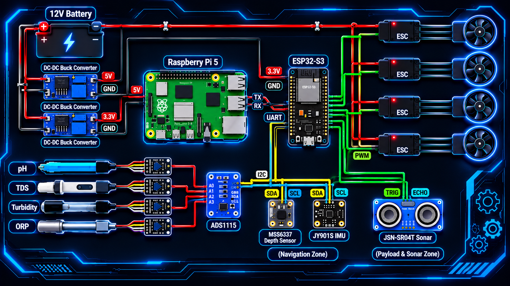

B.Tech Main Project · SUB_V1
A cost-effective, multi-sensor underwater ROV for structural dam inspection in GPS-denied environments.
NEPTUNE (SUB_V1) is designed to inspect dams without putting divers at risk. A dual-compute controller drives the thrusters and sensors, while a laptop control station shows the live camera feed, sensor data and defect detections.
Together, the two form a dual-compute architecture that keeps the ROV responsive and safe: the Pi handles heavy processing while the ESP32-S3 handles real-time control.
